Week 15 - Interface and Application Programming#
Week 15 focused on interface and application programming, learning to create user interfaces that communicate with embedded systems.
The aim was to develop applications that provide meaningful interaction between users and fabricated devices.
This week brought together the hardware skills with software development for complete interactive systems.
Group Assignment#
- Compare as many tool options as possible for interface development
Individual Assignment#
- Write an application that interfaces a user with an input &/or output device that you made
Extra Credit Goals
- Try multiple programming languages or frameworks
- Implement real-time data visualization
- Create a mobile or web application
What I Learned#
This week was lowkey a different vibe compared to the rest of Fab Academy — most weeks are about making the hardware, this one was about putting a usable interface on top of hardware. Also the first week where I leaned heavily on AI design tools end-to-end, which was a workflow I hadn’t really tried before.
- How to actually plan a UI before opening any design tool — the Claude web interface walked me through the right questions (audience, core jobs, screens, fidelity) and that planning step did most of the work
- Google Stitch for going from a rough idea to a mockup in minutes — uploading the first prototype and getting back a designed-out version felt basically like sketching with a much faster pencil
- Claude Design for taking the Stitch mockup further into an actual clickable Flutter prototype — the “handoff to Claude Code” flow was new to me and genuinely useful
- How to use Codemagic to take a Flutter repo on GitHub and build a real
.ipafor iOS — no Mac, no Xcode, no Apple Developer account dance, just point it at the repo and let it build - Most importantly — the AI-design tool chain isn’t a replacement for design thinking, it’s a speed multiplier on top of it. The hours I would’ve spent fighting Figma went into actually deciding what the app should do 🤌
Weekly Schedule#
| Day | What I Did |
|---|---|
| WED | Lecture on interface and application programming |
| THU | Local Lecture at Superfablab Kochi |
| FRI | UI planning with the Claude web interface — web app prototype |
| SAT | Google Stitch — mobile mockup from the web prototype |
| SUN | Claude Design — Flutter prototype + handoff to Claude Code |
| MON | Push to GitHub + Codemagic build → working iOS app |
| TUE | Regional review |
Group Assignment#
The link to our group assignment is below: Group Assignment
Individual Assignment#
Planning#
For this project, I am planning to build a smart toolbox that can track whether tools are present or missing. Each tool will be placed on a switch, so when a tool is removed, the system can detect it. I will also use RFID to identify who is opening the toolbox and taking tools. Along with the hardware, I plan to develop a simple web app that shows all tools in real time, highlighting missing ones. There will also be an admin view to see who took which tool and when. This project is being developed at Super Fablab Kerala to make tool management easier and more organized.
AI PROMPT USED WITH THE CLAUDE WEB INTERFACE
Let’s plan a UI application. I’m building a smart toolbox that tracks the tools. I want a webapp that displays all the tools that are currently present in the toolbox and what all are the tools that are missing. There should also be an admin panel to view who all took what all tools.
Q: How does the tool tracking work on the hardware side? A: Switches on top of which the tools would be placed.
Q: Who uses the main display? A: Anyone with an RFID tag can open the toolbox and take the items.
Q: What stack are you thinking? A: Doesn’t matter, you pick.
Names: Super Fablab Kerala (Kochi, India)
Abhishek Shah , Ali Abdul Gafoor , Archita B K , Ardradevi K , Ashtami P S , Kevin Jijo , Kurian Jacob , Merin Cyriac , Mishael Sharaf , Nadec Biju
This was the initial mockup I’ve used to get an idea of what I’m doing and how I want to get things done. After this I had gotten somewhat ready and I wanted to move to the next level and create a mobile application, for which I have switched to the Google Stitch AI platform. I have moved to Google Stitch and uploaded the screenshot of this UI and asked it to create a mockup design of how the UI can be, and this is what it came up with.
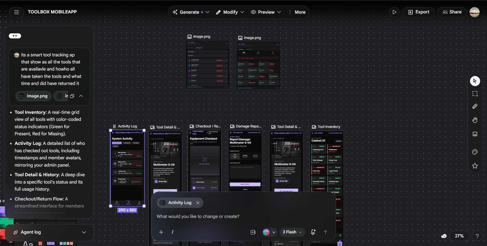
🔗 Open the live Stitch preview
Project link if you want to explore more and see the design in detail.
I wasn’t much keen on this design by Google Stitch and I had wanted to do it in a different way and thought I would try out Claude Design. I have gone onto Claude Design and uploaded the designs by Google Stitch and asked it to create a design for the same, and this is what it came up with.
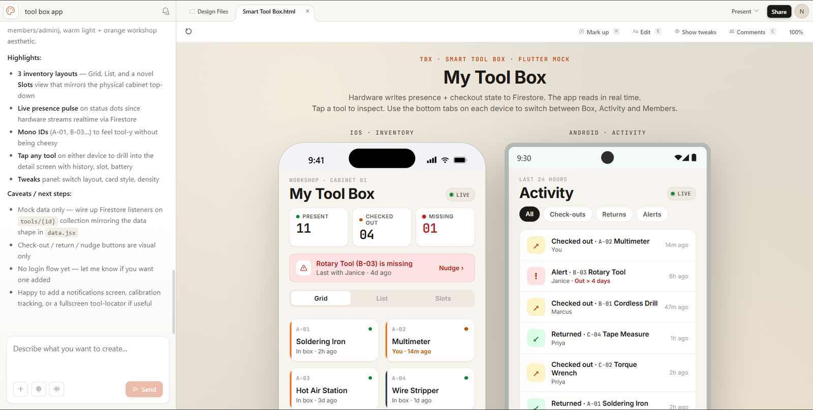
Claude-generated prototype#
↗ Open the prototype in a new tab
AI PROMPT USED WITH THE CLAUDE DESIGN INTERFACE
I wanna build a flutter app for my smart tool box , (Inserted Screenshot of the UI design I have created in google stitch)
Questions answered:
- Audience: Hobbyists / makers
- Core jobs: See what’s in the box (inventory), Check tools out / in, Track who has what, Get alerts when tools missing
- Fidelity: High-fidelity clickable prototype (recommended)
- Screens: Cabinet inventory grid, Admin, Tool detail, Activity feed
- Variations: Just one solid direction
- Aesthetic: Light + orange (workshop)
- Tweaks: Inventory layout (grid vs list), Card style, Density (compact vs roomy)
- Device: Both side-by-side
- Novelty: Mix of familiar + a few novel ideas
- Scanning: by separate hardware that sends data of tool being present and checked out to a Firebase Firestore from which the app will be reading
Handoff to Claude Code#
The next step involved clicking the share button within Claude Design and clicking the handoff to Claude Code button.
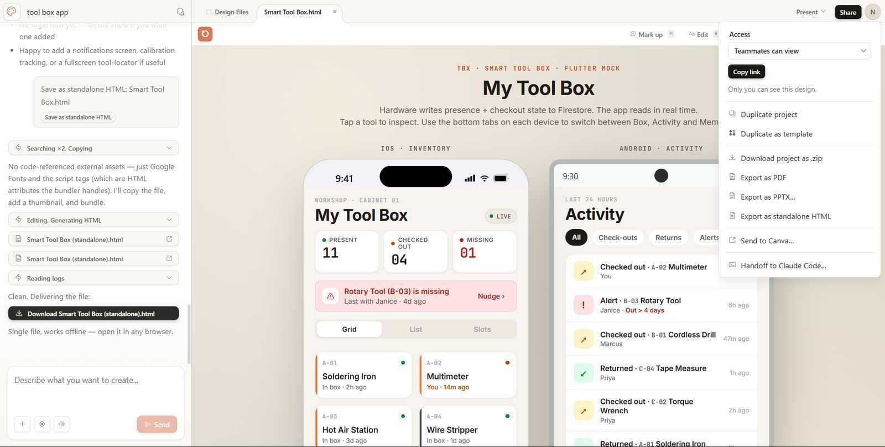
Then I copy the text shown and paste into Claude Code and let it handle the rest.
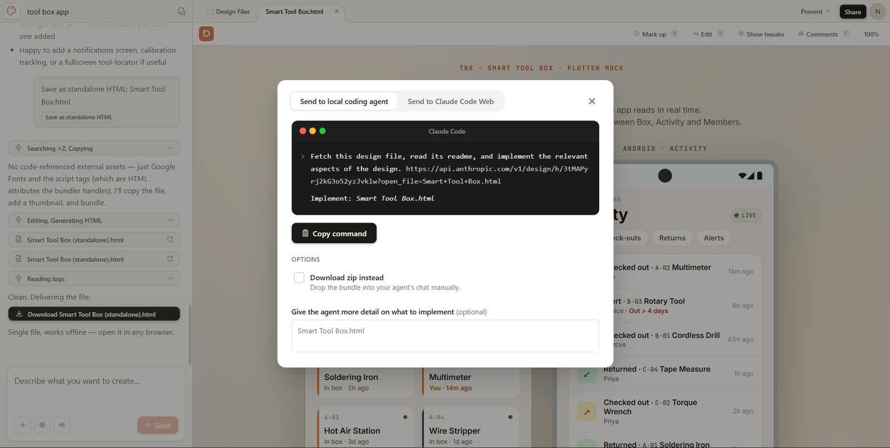
Building the iOS App with Codemagic#
Claude generated the entire file structure and asked me to push it to GitHub, and I had pushed it to my personal GitHub repository and used Codemagic to build the IPA file for the iOS app.
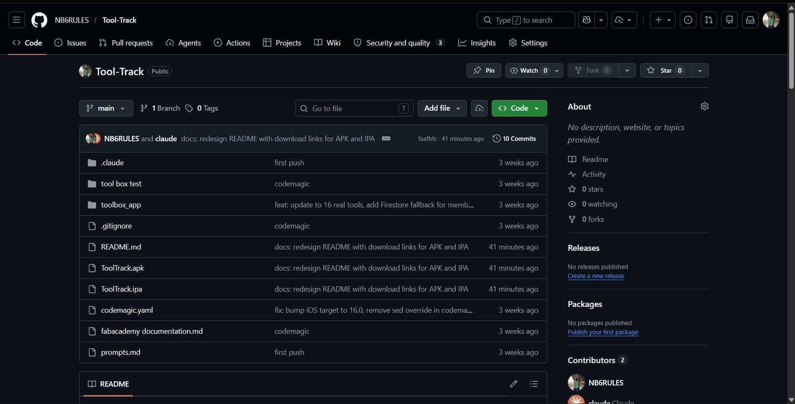
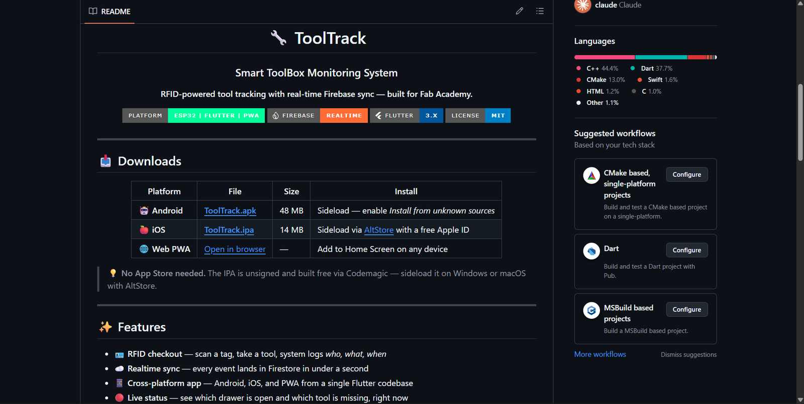
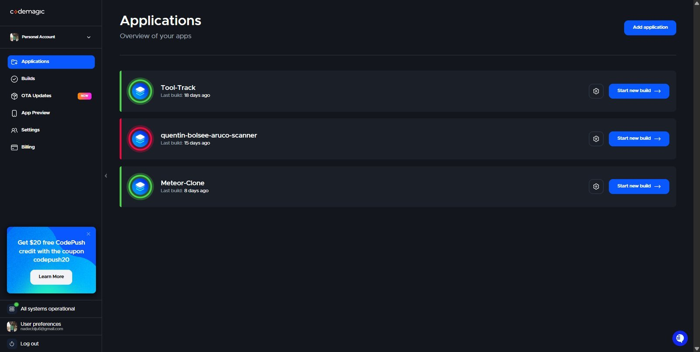
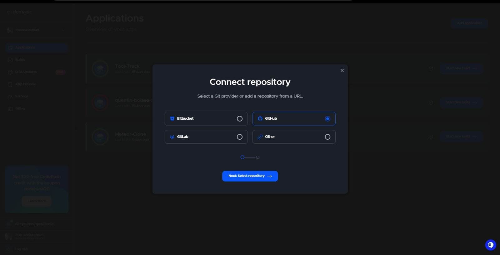
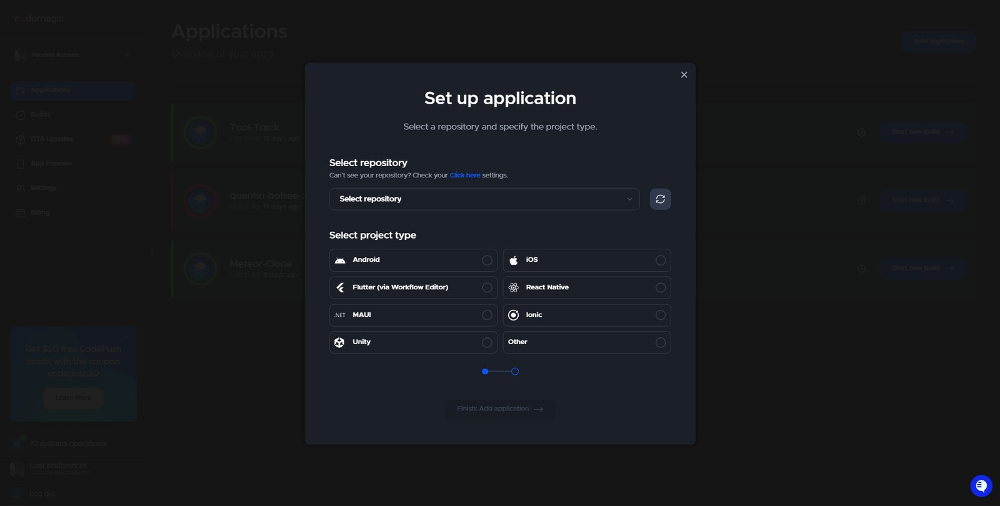
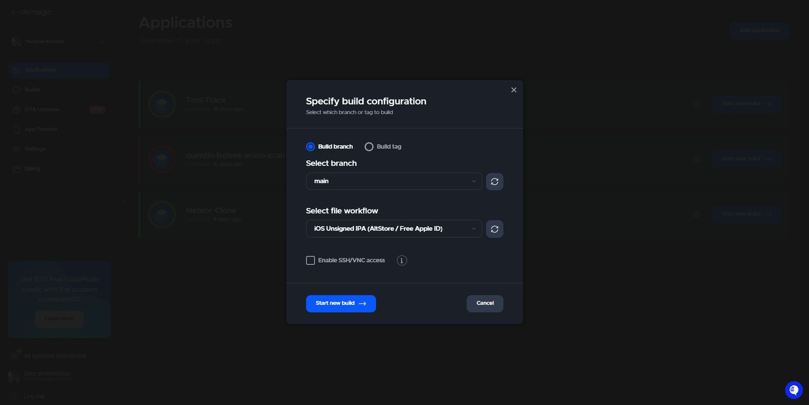
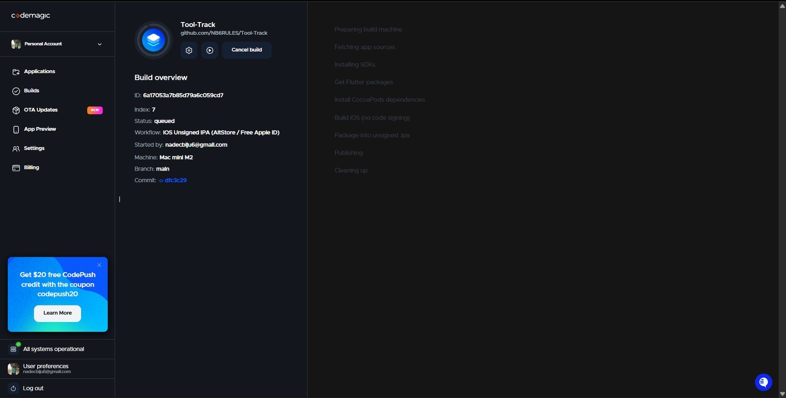
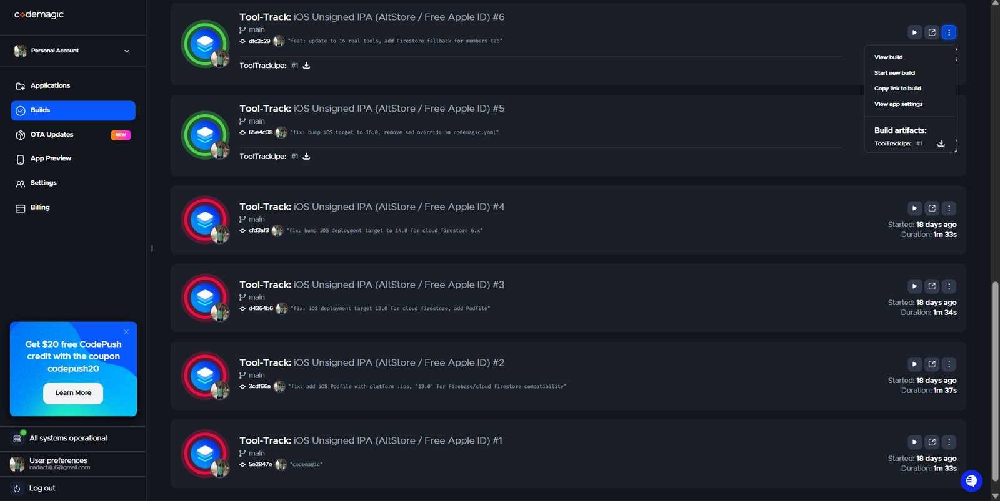
Hero Shots#
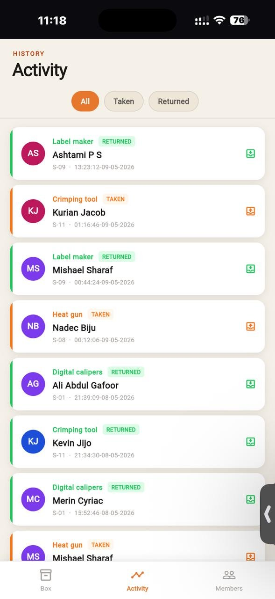
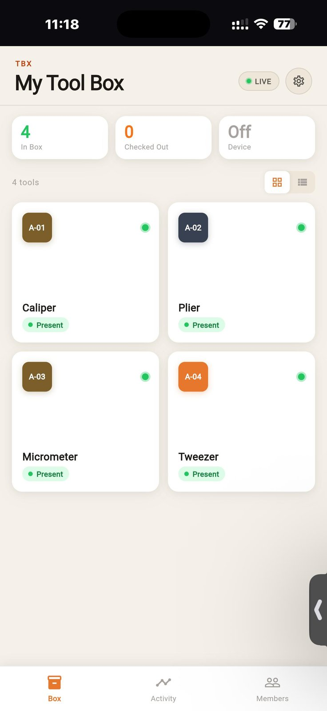
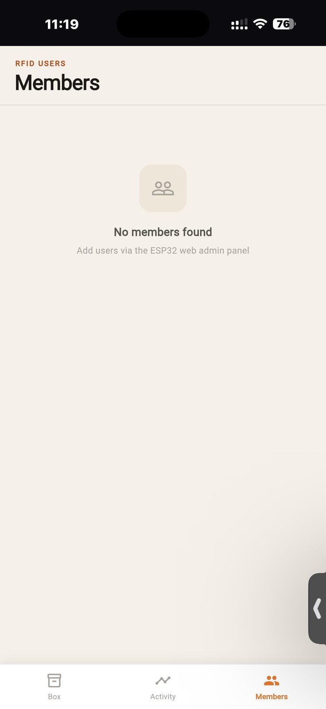
Main xiao Board#
This is the board with the microcontroller and it is connected to a sister board which has a mosfet to control the high amperage switching of the solenoid lock.
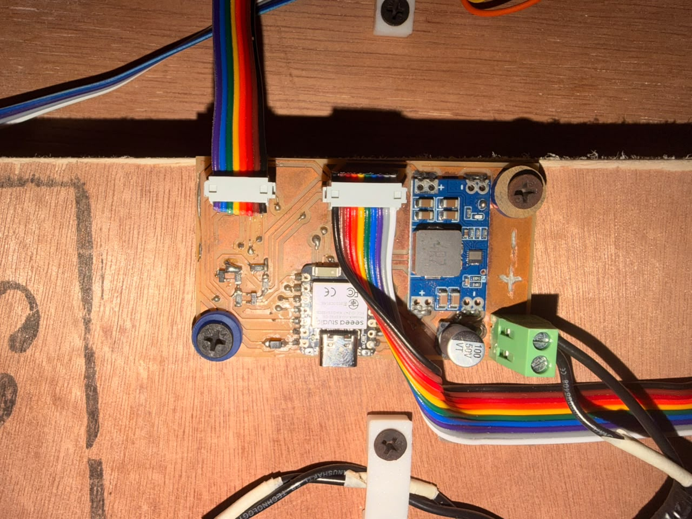
Rfid Reader is connected to the board and it is used to read the RFID tags of the users and the data is sent to the firebase firestore database which is then read by the app to update the status of the tools.
Final Interface after some Aesthetic tweaks#
Reflection#
I am very amused by the capabilities of the AI tools that I have used this week. Me being someone from the mechanical engineering background, I have never thought that I would be able to create a software tool or an Android app — not even 1/10 of this scale — but these tools have enabled me to create such things, and I am very keen on discovering what more AI can do after my Fab Academy journey is complete.